LSTM¶
RNNCELL¶
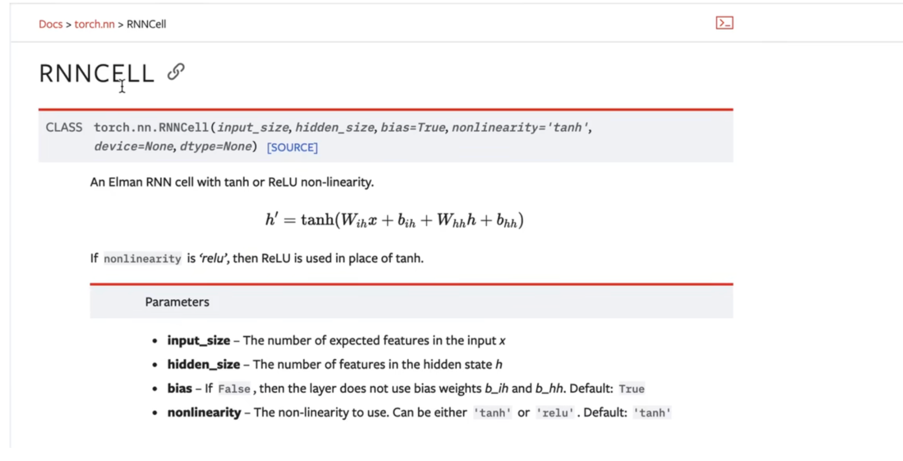
RNNCELL，可以理解为 单步 的迭代
因为所有的循环神经网络 都是有很多步去迭代，最终把每一步的状态 取出来作为输出
这里的RNNCELL，也就是说 多个，每个时刻的计算 就是一个RNNCELL，然后把 多个RNNCELL 连起来 ，其实就构成了 一个RNN，所以 无论是RNN也好，还是 GRU也好，还是 LSTM也好，它们 都有各自的CELL，然后每个CELL，其实就是一个 单步的运算，可以理解为 单个时刻的运算，下面 有一个例子
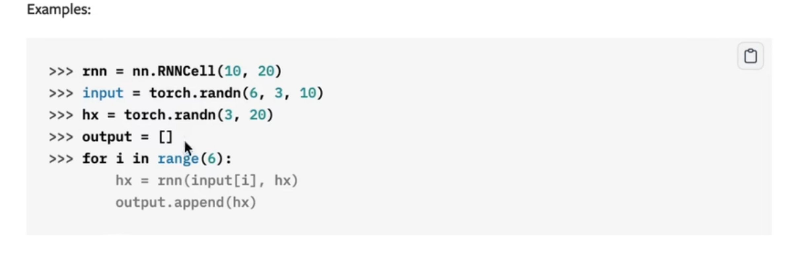
代码解释：
- 首先实例化 RNNCELL
- RNNCELL的
input size和hidden size分别为10和20 - 定义
input的训练特征，batch size是3，然后时间长度是6，然后特征维度是10 - 定义初始的
hidden state[hx] - 用RNNCELL做每一次迭代
所以定义一个 for循环，然后 每一步调用RNNCELL实例化的操作，算出每一时刻的隐含状态 hx=rnn(input[i],hx) ，定义 \(h_x\)接收输出结果
- RNNCELL 就是 单步 的计算，包括 GRUCELL 和LSTMCELL，都是单步的
- RNN 就是把多个RNNCELL 连起来 ，所以是多步的
LSTM 官方 api¶

LSTM 原理可见博客：
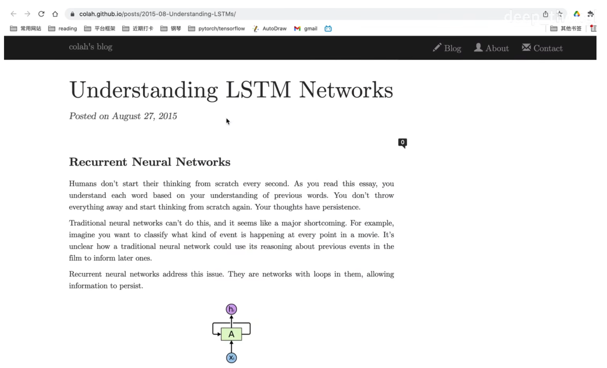
& RNN¶
- LSTM比RNN多了几个门
- RNN比较简单 ： 输入 + 隐含状态，只有这两个状态

在LSTM中，多了一些门：
（1）输入门
（2）输出门
（3）遗忘门
（4）记忆单元
LSTM 图示¶

图片理解：
最上面的横线，长得像传送带的东西，是一个细胞单元，或者说细胞状态
整个LSTM就是靠这个细胞状态，来不断的 更新 历史信息的
LSTM 有哪些门？¶
对照官方 api：
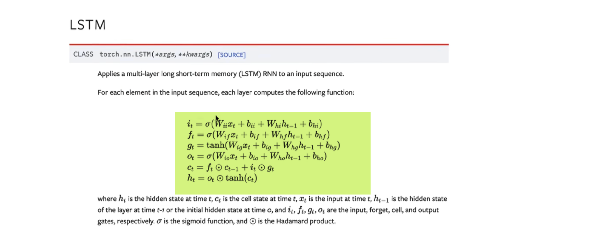
i就是 输入门f就是遗忘门g就是细胞o就是输出门c成为cell，叫细胞单元，或者叫 细胞状态h就是LSTM的隐含状态，或者说 输出。因为模型最终输出的是 \(h_t\)
api 对应到图、数学公式¶
图示：
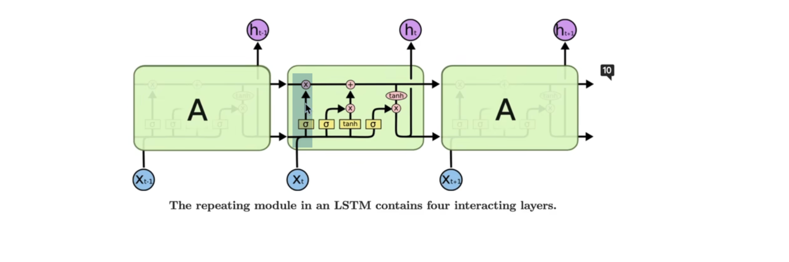
图示 & 符号：

（1）遗忘门：\(f_t \odot c_{t-1}\)

step1：遗忘门的输出(得到经过遗忘门的筛选信息 ) \(f_t\)
遗忘门的输出 \(f_t\) 怎么计算的？
\(x_t\) 跟历史的输出进行交互，然后经过 \(\sigma\)线性函数，得到 \(f_t\)
step2：遗忘门的输出跟上一时刻的 \(c_{t-1}\) 相乘，对应的数学公式：
（2）输入门 \(i_t\) 、细胞 \(g_t\)

如图框：
- 同样 \(x_t\)跟过往的 \(x_{t-1}\)进行交互，然后经过一个 \(\sigma\)函数，得到输入门 \(i_t\)
- 然后 \(x_t\) 跟上一时刻的 \(x_{t-1}\)，经过 \(\tanh\)激活函数 ，得到的是 \(g_t\)，称作细胞
- \(g_t\) 跟输入门相乘，相当于对当前的输入信息进行筛选
公式：
（3）最新细胞状态的 \(c_t\)
① 把信息\(g_t \odot i_t\)加到目前最新的 \(c_t\) 上
② 最新的 \(c_t\)是上一时刻 \(c_t\)乘遗忘门\(f_t\)，得到新的 \(c_t\)
也就是说该丢掉的信息丢掉了再加上输入门 ，更新细胞状态，这个过程对应的公式表示：
（4）输出门 \(\ o_t\)

最后一根线叫做 输出门
同样是 \(x_t\)跟\(h_{t-1}\)，进行交互，经过sigmoid函数，得到\(o_t\)，就是输出门，最终的输出 ： \(o_t × \tanh (c_t)\)，数学公式表达：
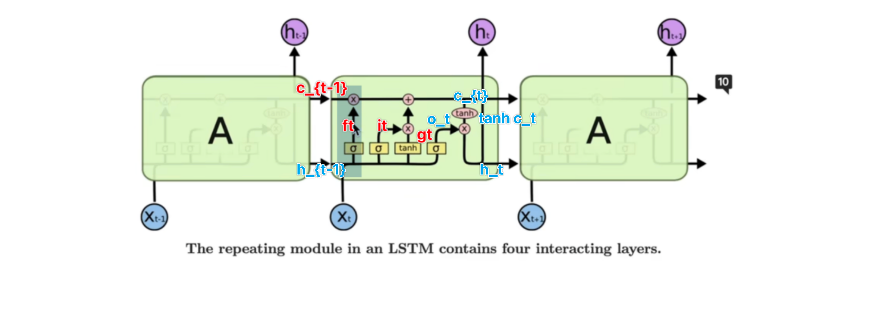
\(h_t\) 跟每一时刻的输入进行交互的，也就是线性组合
\(c_t\)不断对 历史信息进行一个 更新
通过遗忘门、输入门，不断对 \(c_t\)进行一个 更新
以上是LSTM的公式 和 结构，再来看一遍数学公式：
补充：
（1）但从公式来说，\(i、f、g、o\) 需要的就是 \(x_t\) 和 \(h_{t-1}\)当前时刻的输入和历史信息
（2）对比 RNN 的公式：

单从公式来说，RNN 历史信息的保存仅通过 当前时刻的输入 \(x_t\) 和 上一时刻的历史信息 \(h_{t-1}\)
（3）再放一遍公式，体会：

（4）LSTM 多了一个细胞状态，问题：为什么 LSTM 要设置细胞状态，为什么要这么设计公式更新细胞状态和隐藏状态？
（5）查阅资料
ref：LSTM
0、核心是 细胞门（对比 RNN 这个是比较好理解的。可是为什么要有细胞门呢？）
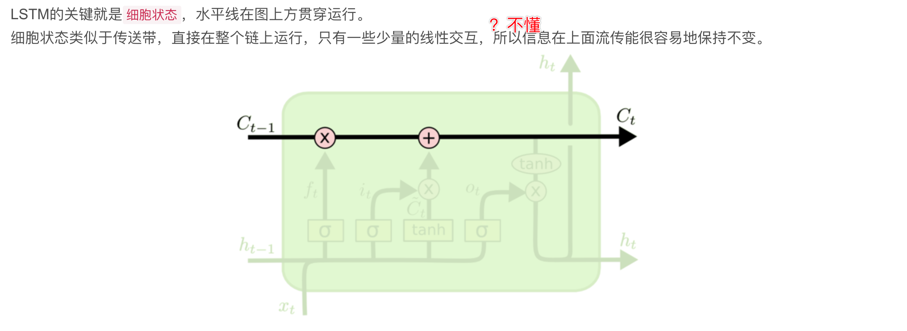
1、忘记一些信息
遗忘门的作用是 决定丢弃什么信息
2、新东西加入 细胞状态
输入门 & 不知道怎么称呼合适的东西（学名：\(\tilde{C}_t\)）
\(\sigma\) 函数 和 \(\tanh\) 函数有什么区别？为什么 \(\sigma\)函数就起了那样的作用，\(\tanh\)函数又起了这样的作用？
3、


（6）RNN、LSTM、GRU通用网络框架
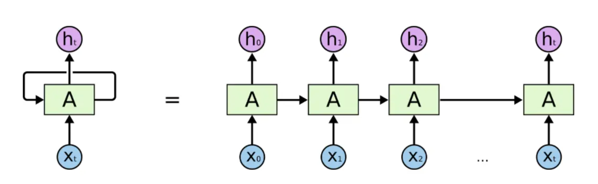
（7）RNN & LSTM 的应用例子（帮助理解）：
RNN 就足够：

LSTM 才可以（间隔太大）：

（9）LSTM 的理解：
输入：\(x_t\) 、\(h_{t-1}\)、\(c_{t-1}\)
中间：\(i、f、g、o\)
输出：\(c_t\)、\(h_t\)
一、忘记门 \(f\)
- 要丢弃什么信息
LSTM的第一步是决定我们要从细胞状态中丢弃什么信息。
怎么实现的？
该决定由被称为"忘记门"的\(\ Sigmoid\)层实现
具体怎么实现？
查看ht-1(前一个输出)和xt(当前输入)，并为单元格状态Ct-1(上一个状态)中的每个数字输出0和1之间的数字。
为什么用 sigmoid 函数，输出代表什么意思？
1代表完全保留，而0代表彻底删除，所以用 sigmoid 函数
图示
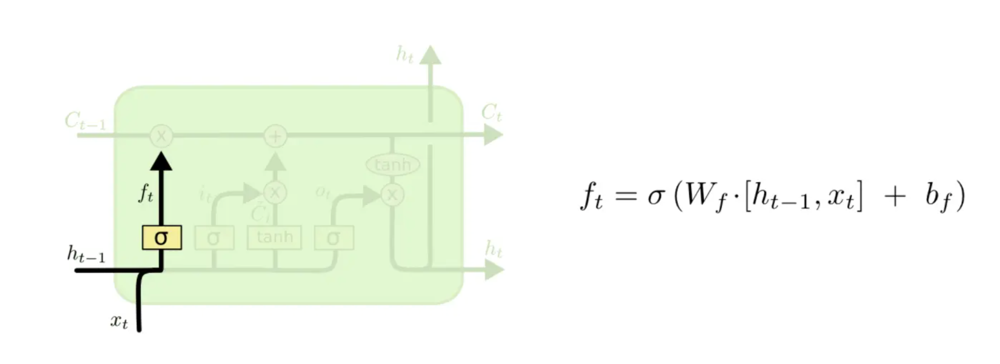
二、\(i_t\)、\(g_t\)
- 要保留什么信息？
就是决定我们要在细胞状态中存储什么信息
这部分分为两步：
1、首先，称为"输入门层"的Sigmoid层决定了将更新哪些值
2、接下来一个tanh层创建候选向量Ct，该向量将会被加到细胞的状态中
在下一步中，我们将结合这两个向量来创建更新值。
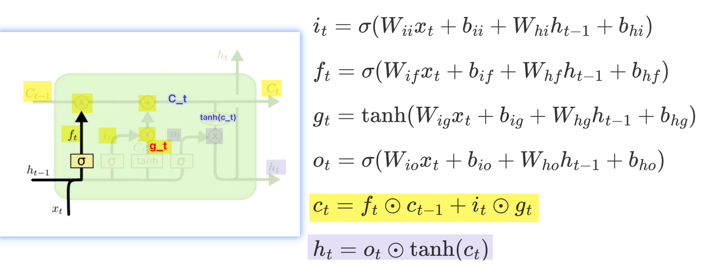
图示：
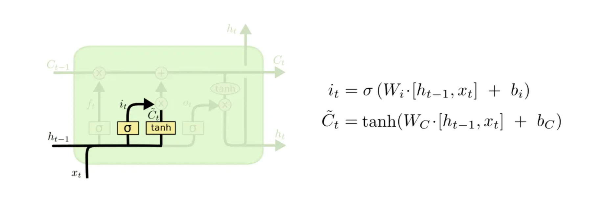
这里的 \(\tilde{C}_t\) 和 \(g_t\) 是一个东西，学名：候选向量
问题：\(\tanh\) 输出的含义是什么？
类似 sigmoid 的输出 0 表示遗忘，1 表示记住
三、更新细胞状态得到 \(c_t\)
更新上一个状态值\(C_{t−1}\)了，将其更新为\(C_t\)
将上一个状态值乘以\(f_t\)，以此表达期待忘记的部分 $ \iff f_t \odot c_{t-1}$
之后将得到的值加上 \(i_t∗\tilde{C}_t\) \(\iff + i_t \odot \tilde{C}_t\)
这个得到的是新的候选值 \(C_t\)， 按照我们决定更新每个状态值的多少来衡量，最终的公式：
以上得到了 第一个 输出 \(c_t\)，现在开始第二个输出 \(h_t\)
四、输出什么
最后需要决定要输出什么
此输出将基于细胞状态，但 是一个过滤版本。 \(tanh(C_t)\)
- 首先，经过一个sigmoid层，决定了要输出的细胞状态的哪些部分 \(o_t = \sigma(f(h_{t-1},x_t))\)
- 然后，将单元格状态通过tanh（将值规范化到-1和1之间），并将其乘以Sigmoid门的输出 \(h_t = o_t \odot \tanh(c_t)\)
至此就输出了决定的那些部分

把公式精简一下：

输入：\(x_t\)、\(h_{t-1}\)
操作：(这里的符号是参照官网 api 的)
\(f_t = \sigma(f(x_t,h_{t-1})) \iff \sigma(W_f[x_t,h_{t-1}]+b_f)\)
\(i_t = \sigma(f(x_t,h_{t-1})) \iff \sigma(W_i[x_t,h_{t-1}]+b_i)\)
\(g_t = \sigma(f(x_t,h_{t-1})) \iff \sigma(W_g[x_t,h_{t-1}]+b_g)\)
\(o_t = \sigma(f(x_t,h_{t-1})) \iff \sigma(W_o[x_t,h_{t-1}]+b_o)\)
\(f\) 代表仿射变换 \(Wx+b\)
输出：\(c_t、h_t\)（这个图示，画得太细，反而晕乎）
\(c_t = f_t \odot c_{t-1} + i_t \odot g_t\)
理解：
1、\(f_t\) 指示 要忘记的历史信息（白话：\(更新历史信息\)，该记住的记住，该忘记的忘记，忘记多少也表达了记住多少，需要看参照）
2、\(i_t\) 保留多少输入信息，为输入信息加权；
\(g_t\) 表示输入信息，最后得到的是要记住多少输入信息
3、最后同时存到 \(c_t\) 中
\(h_t = \tanh({c_t}) \odot o_t\)
理解：
最后，需要决定输出什么
输出基于细胞状态，是过滤版本
step1：首先，通过sigmoid层，决定要输出的细胞状态的哪些部分
step2：然后，将单元格状态通过tanh（将值规范化到-1和1之间）
step3：并将其乘以Sigmoid门的输出，至此输出决定的那些部分
以上是关于 LSTM 内部的计算理解
torch.nn.LSTM¶
与 RNN 对比：
在参数相同的条件下，LSTM的序列建模能力是强于RNN的，所以比较大的序列建模任务都是用 LSTM做
pytorch 的官方 api：torch.nn.LSTM

- 这是一个class，是一个类
- 要用的话
（1）首先进行实例化，得到一个算子
（2）喂入输入序列，输入序列经过LSTM网络，得到的 每个输入状态的输出，最后将得到状态的输出： \(h_t\)
（3）每一时刻的 \(h_t\) 组合起来的输出序列
明确 LSTM 的公式：
首先，LSTM核心：细胞状态
一共涉及的东西：\(f、i、g、o、h、c\)
输入：\(x_t、h_{t-1}\)
公式：

\(f_t=\sigma(w_f[x_t,h_{t-1}]+b_f)\)
\(i_t = \sigma(w_i[x_t,h_{t-1}]+b_i)\)
\(g_t = \tanh(w_g[x_t,h_{t-1}]+b_g)\)
$o_t = \sigma(w_o[x_t,h_{t-1}]+b_o) $
\(c_t = f_t \odot c_{t-1} + i_t \odot g_t\)
\(h_t = o_t \odot \tanh(c_t)\)
四个门，分别是\(i、f、g、o\)
这里有四个门：
（1）其中有三个门非线性激活函数都是 sigmoid
（2）\(g_t\)的激活函数是 tanh函数
其实这四个门的运算有很大的相似性
有 四个 \(W\)
并且四个\(W\)都是跟\(x_t\)进行一个矩阵相乘
同样的 \(W_{hi} 、W_{hf}\)右边的四个\(W\)，也是跟 \(h_{t-1}\)，进行矩阵相乘
所以虽然看上去有4个\(W_i\)，但是可以把 这个 四个 \(W_i\)叠起来
比方说 每个\(W_i\)是\(2\)行，那么\(4\)个\(W_i\)，就可以 叠成\(8\)行

然后再跟 \(x_t\) 进行一个相乘，就是把 这个 \(四个 W乘以x\)
\(W×x\) 组合起来，一起算
同样这里的\(W乘以h(W×h)\)也是一样的
由于都是 乘以 同一个\(h\)
同样把 四个 \(W\)堆叠起来，\(stack\)堆叠来，算完了 再\(split\)

如图，还有\(4\)个\(b_i\)和\(b_h\)，输入 \(linear\)的偏置 和上一时刻 隐含状态线性层的偏置
同样这里 \(4\)个偏置，\(4\)个\(b_i\) 就是直接加，不需要联合算
同样这里的\(b_h\)，也是\(4\)个偏置
维度都是跟\(i_t、 f_t\) 维度是一样的，得到的 \(i、f、g、o\)以后，就可以算出当前时刻细胞的状态 \(c_t\)

About \(c_t\) ：
（1）\(c_t= f_t×c_{t-1}\)，中间的乘是逐元素的乘，不是矩阵乘法
（2）默认\(f_t\)跟\(c_{t-1}\)维度是一样的，同一位置上的元素两两相乘
（3）同样 \(i_t\)和\(g_t\)也是一样，同一位置的两两元素 相乘
（4）乘完以后元素再加起来，得到\(c_t\)
\(c_t\) 是当前时刻的细胞状态，就是上面的黑线，这黑线是 LSTM 的创新
（作者咋想的，要加条黑线，还有这些门的设计，why？）